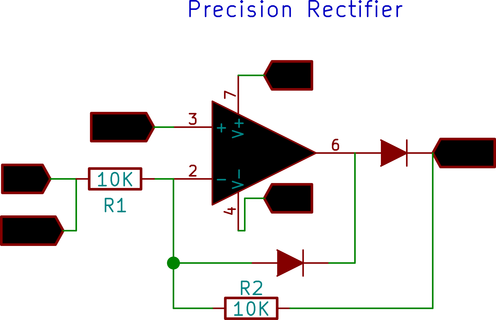

Precision Rectifier
The precision rectifier, also known as a super diode, is a configuration obtained with an op-amp in order to have a circuit behave like an ideal diode and rectifier.
This example shows half-wave rectification using this circuit. Notice how the peaks of both input and output coincide. In the simple diode based rectifier, the 0.6 volt forward threshold voltage causes a similar difference in the peak heights of the input and output waveforms.

Make the Connections as shown in the figure.
CH1 monitors the original waveform output from W1.
CH2 monitors the rectified waveform .
Click on various areas on the plot to activate crosshairs, and note voltage values of the input and output peaks.